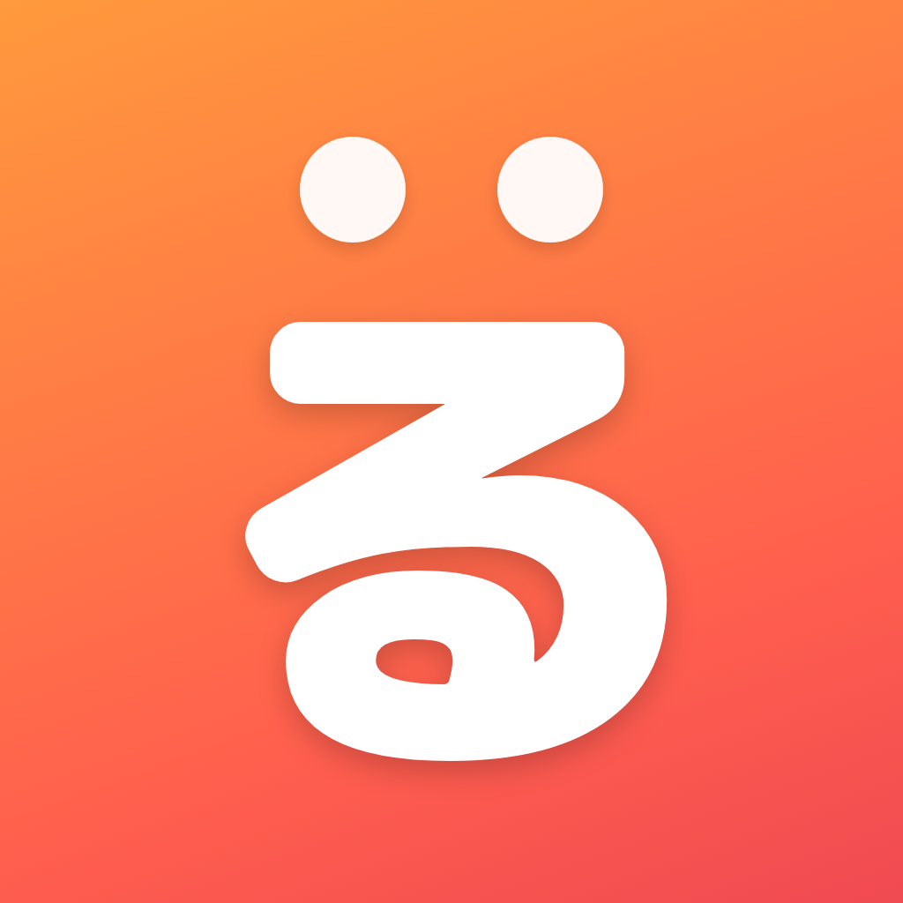

るびポンは、いま見ているページにそのまま「よみがな」を付ける
Safari / Chrome のブラウザ拡張機能です。
難しい漢字も、今日から読める。
↓ ボタンを押すと、るびポンの動きを体験できます
ニュースも、図鑑も、お知らせも。「そのままのページ」が読みやすくなります。
ツールバーのボタンを押すだけ。ページを開いたら自動で表示する設定もできます。
軽快なシステム辞書（Safari）、語彙の充実したIPA辞書、豊富な語数のSudachi辞書を切り替えられます。
「1月1日」「3階」「2泊3日」のような日付・助数詞の読み分けを、250以上の補正ルールで自動修正します。
人名や専門用語など、思いどおりの読みにしたい言葉を自分で登録できます。
ルビの大きさや行間をスライダーで調整。よく見るサイトごとに設定を自動で覚えます（最大100サイト）。
読みの解析はすべて端末内で完結。見ているページの内容が外部に送られることはありません。
読む人の段階に合わせて、ふりがなの「主役」を選べます。
東京タワーに行きました。
漢字の上に小さくふりがな。ふつうの本と同じ、いちばん読みなれた形です。
東京タワーに行きました。
ひらがなが主役、漢字は小さく上に。漢字を習う前のお子さまでもページが読めます。
むずかしい設定はありません。
Safari: 設定 > アプリ > Safari > 機能拡張で「るびポン」をオン。
Chrome: ウェブストアから追加するだけ。
ニュース、辞典、学校のお知らせ…。ふりがなを付けたいページをふつうに開きます。
ツールバーのるびポンボタンからワンタップ。次からは自動表示にもできます。
「なぜ安心して使えるのか」を、すこし詳しくご紹介します。
るびポンは、日本語を単語に分けて読みを推定する「形態素解析」という技術を使っています。この処理に必要な辞書とプログラムはすべて拡張機能の中に同梱されており、閲覧中のページの内容・URL・入力内容が外部のサーバーへ送信されることは一切ありません。アクセス解析や広告も含まれていません。お子さまの端末や学校の端末でも安心してお使いいただけます。
日本語の読みには「1月1日（ついたち…ではなく、がんじつ？）」「3階（さんがい）」「2泊3日（にはくみっか）」のような揺れがつきものです。るびポンは形態素解析の結果に対して、日付・助数詞・慣用的な読みを整える250以上の補正ルールを重ねて適用しています。それでも読みまちがいはゼロにはなりません。気になる言葉はユーザー辞書に登録すれば、いつでも自分の読みで表示できます。
kuromoji.js（IPA辞書）/ Sudachi（WASM版・ワークス徳島NLP研究所の辞書）/ Apple の言語解析フレームワーク（Safari版のシステム辞書）<ruby> 要素 — Webの標準技術なので、ページのレイアウトを壊しにくい設計でするびポンは、漢字の読みにつまずくすべての人の「読みたい」を支えるために、教育現場の視点から開発されています。開発の記録・技術資料は GitHub で公開しています。不具合のご報告や読み補正のご要望も歓迎します。
はい、無料です。アプリ内課金や広告もありません。
日本語のテキストを含むほとんどのWebページで動作します。動的に更新されるページ（SNSやライブブログ等）にも追従します。一部の特殊なページ（画像化された文字など）にはふりがなを付けられません。
自動解析のため、まれにあります。日付や助数詞など間違いやすいパターンは補正ルールで自動修正しているほか、ユーザー辞書で任意の言葉の読みを固定できます。
はい。ページ内容の外部送信・広告・課金は一切なく、解析はすべて端末内で行われます。
できます。設定で読み仮名の種類を「ローマ字」に切り替えられるので、日本語学習の初期段階の方にも使えます。